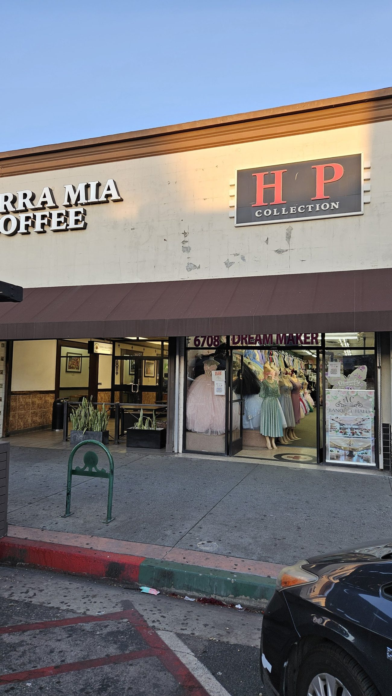
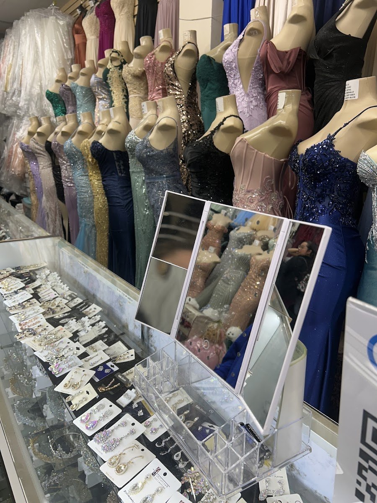
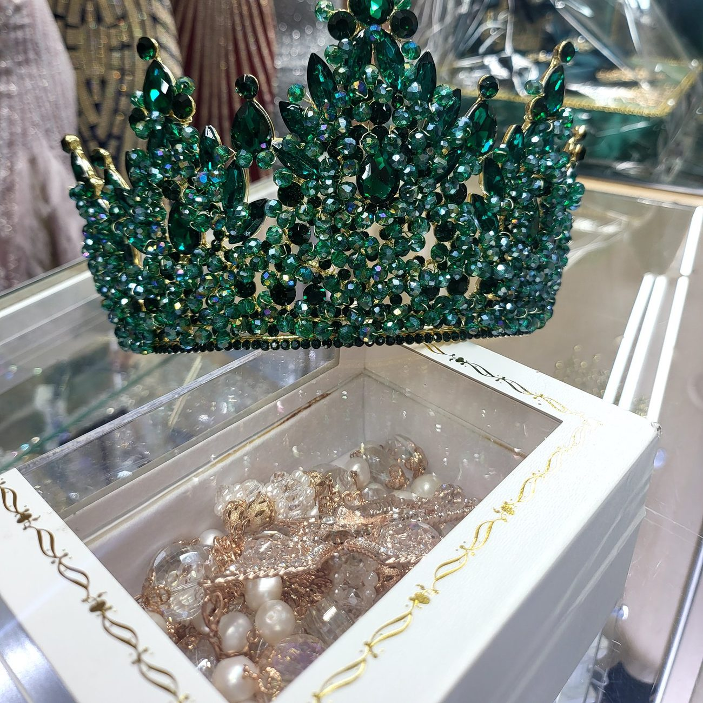
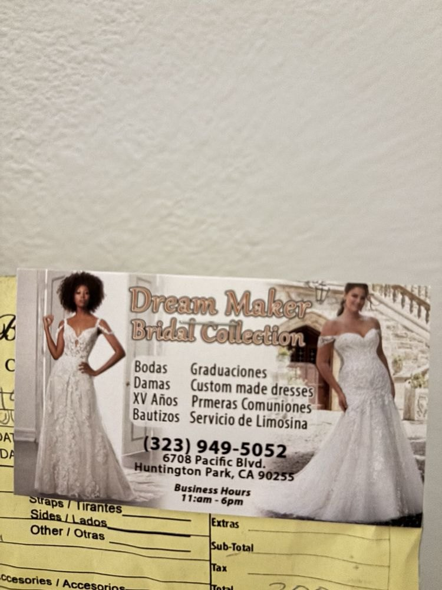

Their website was an Etsy shop that never mentions the store. Su sitio web era una tienda de Etsy que nunca menciona la tienda.
A bridal and quinceañera boutique on Pacific Blvd with 293 five-star reviews, a woman named Betty who builds dresses to order, and a web presence that could not tell you any of it. This is what I built instead. Una boutique de novias y quinceañeras en Pacific Blvd con 293 reseñas de cinco estrellas, una señora llamada Betty que hace vestidos a la medida, y una presencia en línea incapaz de contar nada de eso. Esto es lo que construí en su lugar.
- RoleRol
- Research, design & buildInvestigación, diseño y desarrollo
- LocationUbicación
- Huntington Park, CA
- StatusEstado
- Preview, not yet liveVista previa, aún no publicado
- Stack
- 1 file · vanilla JS1 archivo · JS puro
You cannot ship a fitting. Una prueba de vestido no se puede enviar por correo.
Google listed their website as dreammakerbridal.etsy.com. I went through that shop line by line: 58 listings, mostly ready-made formal gowns. One bridal gown. One quinceañera dress, and it was a mini. Zero custom listings — the exact thing their reviews rave about.
Google mostraba su sitio como dreammakerbridal.etsy.com. Revisé esa tienda listado por listado: 58 artículos, casi todos vestidos de gala ya hechos. Un vestido de novia. Un vestido de quinceañera, y era de niña. Cero trabajos a la medida, justo lo que más elogian sus reseñas.
And the page never mentions Huntington Park, Pacific Blvd, a physical store, an appointment or a phone number. I checked for all of it. So a customer who searches their name, taps the website link and lands on Etsy has no way to learn there is a store five minutes away she could walk into and try a dress on today. Y esa página nunca menciona Huntington Park, Pacific Blvd, una tienda física, una cita ni un teléfono. Lo verifiqué todo. Entonces una clienta que busca su nombre, le da clic al sitio y llega a Etsy no tiene forma de enterarse de que hay una tienda a cinco minutos donde podría probarse un vestido hoy mismo.
Their reputation is three times bigger than Etsy showsSu reputación es tres veces mayor de lo que Etsy muestra
4.9 across 293 Google reviews, against 4.8 across 91 on Etsy. Two hundred reviews an Etsy visitor never sees. Their Yelp is a third story again — listed under a different name, Dream Maker Boutique, with only 4 reviews. Three platforms, three identities, no single place they control. 4.9 en 293 reseñas de Google, contra 4.8 en 91 de Etsy. Doscientas reseñas que quien llega por Etsy nunca ve. Su Yelp es otra historia: aparece con otro nombre, Dream Maker Boutique, con apenas 4 reseñas. Tres plataformas, tres identidades, ningún lugar propio.
The reviews are about people, not dressesLas reseñas hablan de personas, no de vestidos
Google's own tags put "helpful staff" on 186 of the 293 reviews. Reading them, nearly every one names somebody: Betty for custom work, Aracely, Andrea, Conni, Sandra. One reviewer wrote "they are truly the Dream makers". That is the business — not a catalogue. Las etiquetas de Google marcan "personal servicial" en 186 de las 293 reseñas. Al leerlas, casi todas mencionan a alguien: Betty para los vestidos a la medida, Aracely, Andrea, Conni, Sandra. Una clienta escribió "de verdad hacen sueños realidad". Ese es el negocio, no un catálogo.
People drive hours to get thereVienen manejando horas
One customer came from Sacramento specifically for this store. Another drove down from Victorville. A third came from out of state and had the alterations done the same afternoon. For a boutique on a commercial strip, that is remarkable, and none of it was visible anywhere online. Una clienta vino desde Sacramento específicamente a esta tienda. Otra manejó desde Victorville. Otra llegó de otro estado y le hicieron los arreglos esa misma tarde. Para una boutique en una calle comercial eso es notable, y no se veía en ningún lado.
Their business card was the briefSu tarjeta de presentación fue el brief
Buried in their Yelp photos was a picture of their own card, already bilingual, listing everything they actually do: bodas, damas, XV años, bautizos, graduaciones, primeras comuniones, custom made dresses — and servicio de limosina. They rent limousines. That appears nowhere else online. Entre sus fotos de Yelp había una foto de su propia tarjeta, ya bilingüe, con todo lo que realmente hacen: bodas, damas, XV años, bautizos, graduaciones, primeras comuniones, vestidos a la medida — y servicio de limosina. Rentan limosinas. Eso no aparece en ningún otro lado.
Five jobs for one page.Cinco tareas para una página.
Say there is a real store, on Pacific Blvd, that you can walk into today.Decir que hay una tienda real, en Pacific Blvd, a la que puede entrar hoy.
Show the custom work and the alterations — the things Etsy structurally cannot sell.Mostrar el trabajo a la medida y los arreglos, lo que Etsy no puede vender.
Put all 293 reviews in one place they own.Reunir las 293 reseñas en un lugar que sea suyo.
Take an inquiry after 5pm, when the store is closed and the planning happens.Recibir consultas después de las 5, cuando la tienda cierra y se planea todo.
Serve the whole site in Spanish, in the register their own card already uses.Servir todo el sitio en español, en el mismo habla de su tarjeta.
Deliberately unlike the last one.A propósito, distinto al anterior.
A masthead, not a nav barUn cabezal, no una barra
The wordmark sits centred in italic serif with the language switch and the phone on either side, and a gold hairline along the bottom edge carries scroll position. It reads like the cover of something rather than the top of an app.El logotipo va centrado en serif itálica, con el idioma y el teléfono a los lados, y una línea dorada abajo marca el avance de lectura. Se lee como la portada de algo, no como el encabezado de una app.
The menu opens as a circleEl menú abre como un círculo
The panel is revealed by a clip-path circle that grows from the button's own measured position, so it appears to come out of the corner you touched. Links stagger in behind it in large Bodoni italic.El panel se revela con un círculo clip-path que crece desde la posición real del botón, así que parece salir de la esquina que tocó. Los enlaces aparecen escalonados en Bodoni itálica grande.
The reviews moveLas reseñas se mueven
293 reviews is their single strongest asset, so the wall scrolls continuously rather than sitting in a grid of six. It pauses on hover and on keyboard focus, and becomes an ordinary scroller for anyone who has asked for reduced motion.293 reseñas es su mayor activo, así que el muro se desplaza en vez de quedarse en una cuadrícula de seis. Se detiene al pasar el cursor y con el teclado, y se vuelve un carrusel normal para quien pidió menos movimiento.
Ivory and gold, from their own logoMarfil y dorado, de su propio logo
Their logo is a gold gown line-drawing on blush. The palette comes straight off it: warm ivory ground, gold rules, one wine accent. Nothing invented, and nothing borrowed from the auto shop I built the week before.Su logo es un vestido dibujado en dorado sobre rosa pálido. La paleta sale de ahí: fondo marfil, líneas doradas, un acento vino. Nada inventado, y nada tomado del taller que construí la semana pasada.
A working preview, built before the pitch.Una versión funcional, hecha antes de la propuesta.
Finished and running, mobile-first, because a mother planning a quinceañera is doing it on her phone at 10pm. I build these before I call the owner, so the conversation starts with something real. Tap around inside the phone, or open it full-screen.Terminado y funcionando, prioridad móvil, porque una mamá planeando unos XV lo hace en su teléfono a las 10 de la noche. Construyo esto antes de llamar al dueño, para empezar con algo real. Explórelo dentro del teléfono o ábralo completo.
A dense little shop, packed to the ceiling.Una tienda pequeña, llena hasta el techo.




Most of their photos are the vendors', not theirsCasi todas sus fotos son de los proveedores
Of the 29 photos on their Yelp, most are catalogue shoots from labels they carry, like May Queen. They are honest to use — those are dresses you can buy there — but only five images are unmistakably theirs. The site is built on those five and treats the rest as what it is: a catalogue.De las 29 fotos en su Yelp, la mayoría son de catálogos de marcas que venden, como May Queen. Es honesto usarlas, son vestidos que sí venden, pero solo cinco imágenes son inconfundiblemente suyas. El sitio se apoya en esas cinco y trata al resto como lo que es: un catálogo.
Pulling the real files, not the thumbnailsBajar los archivos reales, no las miniaturas
Google serves photos at whatever size you ask for. Requesting the originals instead of a sized copy turned the storefront from 676px wide into 2252×4000, and the display case into 3024×4032 — real pixels rather than an upscale. Only the hero, which never surfaced at full size, needed enlarging.Google entrega las fotos al tamaño que se le pida. Pedir los originales en vez de una copia reducida convirtió la fachada de 676px de ancho a 2252×4000, y la vitrina a 3024×4032 — píxeles reales, no un aumento artificial. Solo la imagen principal, que nunca apareció completa, hubo que agrandarla.
What changed.Lo que cambió.
| BeforeAntes | AfterDespués | |
|---|---|---|
| The website linkEl enlace del sitio | An Etsy shop with no address, phone or hours.Una tienda de Etsy sin dirección, teléfono ni horario. | A site they own, leading with the store on Pacific Blvd.Un sitio propio, que empieza por la tienda en Pacific Blvd. |
| Custom workTrabajo a la medida | Zero listings — Etsy cannot sell a fitting.Cero listados: Etsy no puede vender una prueba. | Its own section, built around Betty.Su propia sección, construida alrededor de Betty. |
| Social proofPrueba social | 91 reviews on Etsy; the other 202 invisible.91 reseñas en Etsy; las otras 202 invisibles. | All 293, on a wall that keeps moving.Las 293, en un muro que no deja de moverse. |
| After hoursFuera de horario | Closed at 5, nothing to do until tomorrow.Cierran a las 5 y no hay nada que hacer hasta mañana. | An inquiry form with occasion and event date.Un formulario con ocasión y fecha del evento. |
| SpanishEspañol | Only on the printed business card.Solo en la tarjeta impresa. | The whole site, in their customers' register.Todo el sitio, en el habla de sus clientas. |
| LimousinesLimosinas | Mentioned nowhere online.Sin mención en ningún lado. | Listed with the rest of what they do.Listado junto a todo lo demás. |
One file, no buildUn archivo, sin build
A single dependency-free index.html with inlined CSS and vanilla JS. No framework, no bundler.Un solo index.html sin dependencias, con CSS en línea y JS puro. Sin framework ni bundler.
Motion that never touches layoutMovimiento que no toca el layout
The marquee, the menu reveal and the hamburger are all transform and clip-path. Nothing animates width, height or padding, so no frame triggers a reflow.El carrusel, el menú y el ícono usan solo transform y clip-path. Nada anima ancho, alto ni relleno, así que ningún cuadro provoca un reflujo.
Bilingual by toggleBilingüe con un toque
A CSS-driven data-lang switch, persisted to localStorage and auto-detected on first visit. 108 elements swap in each direction.Un interruptor data-lang en CSS, guardado en localStorage y detectado en la primera visita. 108 elementos cambian en cada dirección.
Built for a thumbHecho para un pulgar
A fixed Call / Directions bar that stays out of the way until the hero's own buttons scroll off, inline SVG icons so nothing renders as colour emoji, and lazy-loaded imagery throughout.Una barra fija de Llamar / Cómo llegar que no aparece hasta que los botones del hero se van, íconos SVG en línea para que nada salga como emoji, e imágenes con carga diferida.
A mother planning her daughter's quinceañera at ten at night now learns three things: the dress is here, the person who alters it is here, and here is where to come.Una mamá planeando los XV de su hija a las diez de la noche ahora se entera de tres cosas: el vestido está aquí, quien lo ajusta está aquí, y aquí es dónde llegar.
None of which an Etsy listing can tell her.Nada de lo cual puede decirle un listado de Etsy.